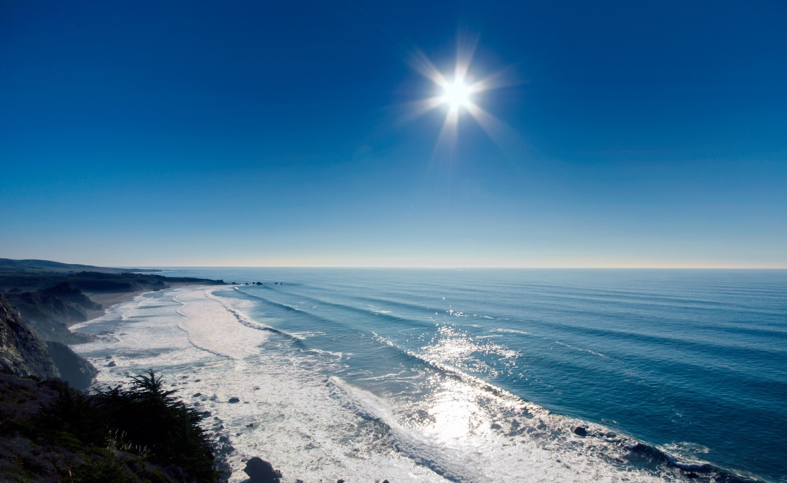

<!DOCTYPE html>
<html>
  <head>
    <meta name="viewport" content="initial-scale=1.0, user-scalable=no" />
    <style type="text/css">
      html { height: 100% }
      body { height: 100%; margin: 0; padding: 0 }
      #map-canvas { height: 100%; }
    </style>
	</head>
    <script type="text/javascript"
      src="https://maps.googleapis.com/maps/api/js?sensor=false">
    </script>
    <script type="text/javascript">
      function initialize() {
        var mapOptions = {
          center: new google.maps.LatLng(13.1137, -59.4518),
          zoom: 15
        };
        var map = new google.maps.Map(document.getElementById("map-canvas"),
            mapOptions);
			
		var marker = new google.maps.Marker({
			position: map.getCenter(),
			map:map,
			title: 'Click to zoom'
			});
			
			
		var marker2 = new google.maps.Marker({
			position: new google.maps.LatLng(map.getCenter().lat() - 0.1, map.getCenter().lng()),
			map:map,
			title:'Info Windows'
			});		
				  
	/*google.maps.event.addListener(map, 'center_changed', function() {
    // 3 seconds after the center of the map has changed, pan back to the
    // marker.
    window.setTimeout(function() {
      map.panTo(marker.getPosition());
    }, 3000);
	});
	*/
	google.maps.event.addListener(marker, 'click', function() {
    map.setZoom(16);
    map.setCenter(marker.getPosition());
    });
	
	
	      var content_s = '<div id = "content">' +
		  '<h1> A Sunset</h1>' +
		  '' +
		   '<span id="desc"> An awesome sunset</span>'+
		   '</div>';
		   
		   var infoWindow = new google.maps.InfoWindow({
				content: content_s
			});
	
	var sw = false;
	google.maps.event.addListener(marker2,'click', function() {
		if (sw === false){
			infoWindow.open(map, marker2);
			sw = true;
			console.log("open");
		}else{
			infoWindow.close();
			sw = false;
			console.log("close");
		}
	});
	
	var homeControlDiv = document.createElement('div');
	var homeControl = new HomeControl(homeControlDiv, map, map.getCenter());
	
	homeControlDiv.index = 1;
	map.controls[google.maps.ControlPosition.TOP_RIGHT].push(homeControlDiv);
		  
}

function HomeControl(controlDiv, map, home){
	var control = this;
	this.home = home;

	controlDiv.style.padding = '5px';

	var goHomeUI = document.createElement('div');
	goHomeUI.style.backgroundColor = 'white';
	goHomeUI.style.borderStyle = 'solid';
	goHomeUI.style.borderWidth = '2px';
	goHomeUI.style.cursor = 'pointer';
	goHomeUI.style.textAlign = 'center';
	goHomeUI.title = 'Click to set map to Home';
	goHomeUI.style.float = 'left';
	controlDiv.appendChild(goHomeUI);

	// Set CSS for the control interior
	var goHomeText = document.createElement('div');
	goHomeText.style.fontFamily = 'Arial,sans-serif';
	goHomeText.style.fontSize = '12px';
	goHomeText.style.paddingLeft = '4px';
	goHomeText.style.paddingRight = '4px';
	goHomeText.innerHTML = '<b>Home</b>';
	goHomeUI.appendChild(goHomeText);

	// Set CSS for the setHome control border
	var setHomeUI = document.createElement('div');
	setHomeUI.style.float = 'left';
	setHomeUI.style.backgroundColor = 'white';
	setHomeUI.style.borderStyle = 'solid';
	setHomeUI.style.borderWidth = '2px';
	setHomeUI.style.cursor = 'pointer';
	setHomeUI.style.textAlign = 'center';
	setHomeUI.title = 'Click to set Home to the current center';
	controlDiv.appendChild(setHomeUI);

	// Set CSS for the control interior
	var setHomeText = document.createElement('div');
	setHomeText.style.fontFamily = 'Arial,sans-serif';
	setHomeText.style.fontSize = '12px';
	setHomeText.style.paddingLeft = '4px';
	setHomeText.style.paddingRight = '4px';
	setHomeText.innerHTML = '<b>Set Home</b>';
	setHomeUI.appendChild(setHomeText);


	google.maps.event.addDomListener(goHomeUI, 'click', function(){
		map.setCenter(control.home);
	});
	
	google.maps.event.addDomListener(setHomeUI,'click',function(){
		control.home = map.getCenter();
	});

	}
      google.maps.event.addDomListener(window, 'load', initialize);
    </script>
  <body>
    <div id="map-canvas"/>
  </body>
</html>